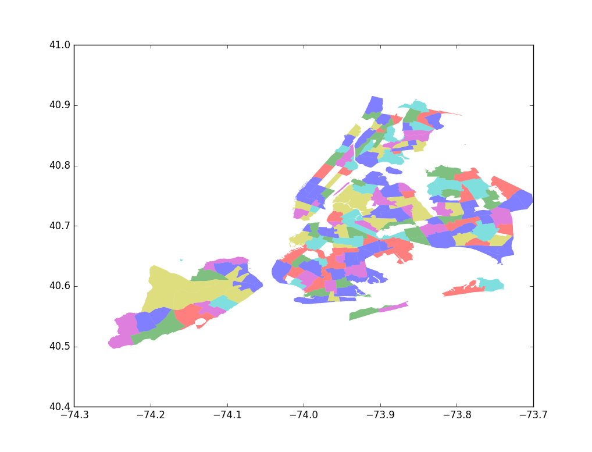
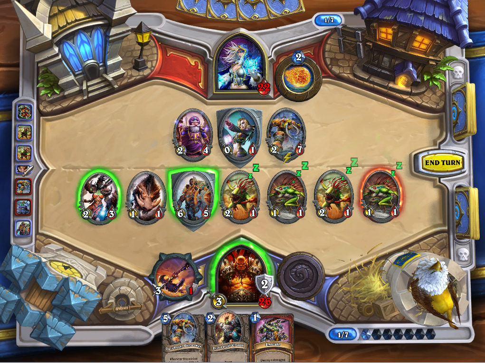
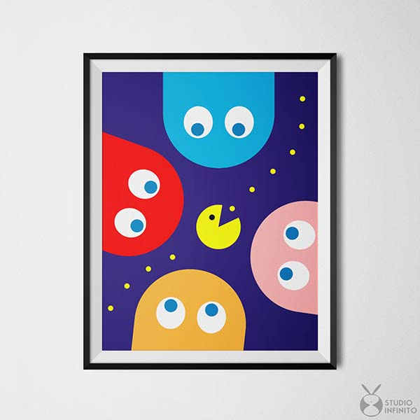

ABOUT ME
Keep your eyes on the stars and your feet on the ground. —Theodore Roosevelt
I am a software engineering student at University of Waterloo in Canada. I enjoy learning, coding, reading, and challenging myself. I have done two research projects with professors at University of Waterloo and two internships at AMD and NVIDIA, respectively. I love also to travel a lot, work out a lot, try new things a lot and eat a lot.
Im really good at:
Learning new things
Programming(mainly C++ and python)
Fencing
Telling bad jokes
MY WORK
Choose a job you love, and you will never have to work a day in your life. -Confucius

plot of different districts in New York based on coordinate input
baby compiler: a compiler for simplified C++

a less cool version of HearthStone game (solid logic, really crappy graphics, will improve in the future)

a visualizer generating and plotting a graph of variable type(under checkerFramework, a more comprehensive typing system) changes through the execution of a Java program
a testing suite for you to compare your program results with expected output
playing with basic data structures in Ocaml

a pacman game: under developement
this responsive website about me :)